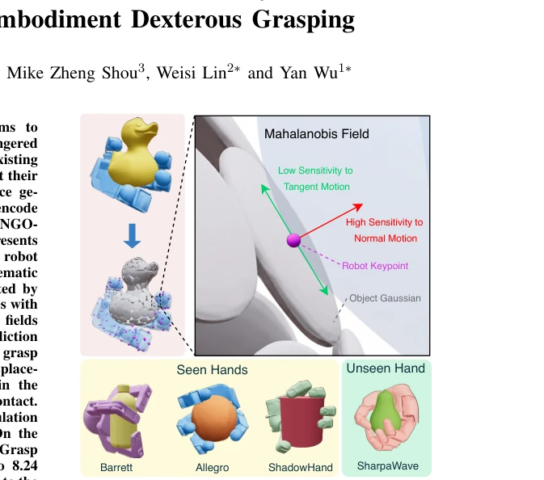
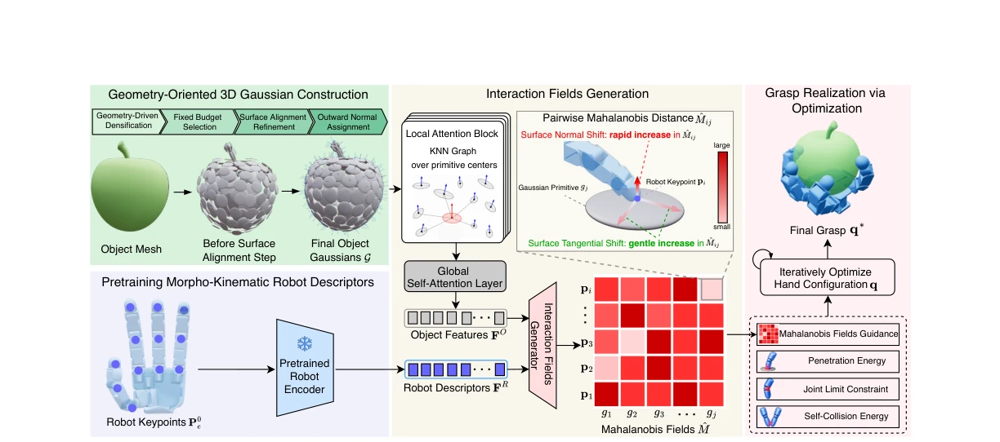

MANGO-Grasp: Mahalanobis Fields over Geometry-Oriented 3D Gaussians for Cross-Embodiment Dexterous Grasping
Heng Zhang, Kevin Yuchen Ma, Mike Zheng Shou, Weisi Lin, Yan Wu abspdf
论文点评Review
这篇论文给跨机械臂抓取又加了个“高斯”滤镜，试图用 3D 高斯点云和 Mahalanobis 场来统一不同手的抓取，听起来比纯点云高级，毕竟点云分不清“滑”和“离”。但说实话，这本质上还是把问题拆解成了“预测场”加“优化求解”，不是端到端的 VLA 策略，遇到复杂动态场景估计还是得靠优化器硬算。真机 86% 成功率看着不错，但开环执行是个隐患，没闭环控制，苹果这种高曲率物体容易滑脱。而且依赖网格重建，纯视觉输入还得先搞个 mesh，这步要是歪了，后面全白搭。不过能在 SharpaWave 上零样本迁移，确实比 DRO 和 TRO 强点，算是给跨 embodiment 领域又添了个靠谱基线，只是未来若能摆脱网格依赖就更完美了，毕竟现在这步操作在纯视觉任务里还是有点累赘。
This paper adds another "Gaussian" filter to cross-robotic-arm grasping, attempting to unify grasping across different hands using 3D Gaussian point clouds and Mahalanobis fields. It sounds more advanced than pure point clouds, since point clouds cannot distinguish between "slip" and "separation". However, to be honest, this essentially decomposes the problem into "prediction field" plus "optimization solving", not an end-to-end VLA strategy; when encountering complex dynamic scenarios, estimation still relies on the optimizer computing directly. The 86% success rate on real hardware looks good, but open-loop execution is a hazard; without closed-loop control, high-curvature objects like apples are prone to slipping off. Moreover, it relies on mesh reconstruction; pure visual input still requires generating a mesh first, and if this step goes awry, the rest is wasted. However, achieving zero-shot transfer on SharpaWave is indeed better than DRO and TRO, counting as adding another reliable baseline to the cross-embodiment field. It would be more perfect if it could eliminate mesh dependency in the future, as this step remains somewhat cumbersome in pure visual tasks.
The core challenge of cross-robotic-arm grasping lies in the contradiction between "generalizability" and "feasibility". Existing methods mostly rely on manual tools or specific models, exhibiting poor scalability [1]-[3]. Although interaction-centric methods have made progress, object representations are often based on uniform point clouds [15][16], ignoring local geometric complexity and leading to insufficient sampling in high-curvature regions. More critically, they simplify contact to isotropic Euclidean distance, unable to distinguish the physical significance of tangential sliding versus normal separation, causing a disconnect between contact prediction and kinematic implementation. On the robot side, existing descriptors either only encode morphology [15] or fail to explicitly couple kinematics, resulting in predicted contact points that cannot be converted into feasible configurations. Therefore, a unified interaction representation capable of explicitly encoding surface geometry anisotropy and robot kinematic capability is required to narrow the gap between contact prediction and actual grasping.

Fig. 1. Overview of the proposed anisotropic interaction formulation for cross-embodiment dexterous grasping. By representing objects with geometry-oriented 3D Gaussian primitives and hands with keypoints, we use Mahalanobis fields to model keypoint–primitive interaction with low sensitivity to surface tangential motion and high sensitivity to surface normal motion. By learning such transferable interaction fields, our framework generalizes across seen hands and transfers zero-shot to an unseen hand.
The overall process is divided into four steps: object encoding, robot encoding, interaction prediction, and grasping implementation. 1. Object: Convert the mesh into a fixed number of 3D Gaussian primitives, using geometry-driven densification to allocate more primitives in complex regions, and assign normals and anisotropic scales to form a "plate-like" structure, preserving local tangential-normal geometry. Compared to traditional point clouds, this adapts to geometric complexity. 2. Robot: Pre-trained morphology-kinematics descriptor, combining morphology consistency contrastive loss and motion-aware reconstruction loss, ensuring keypoint identity remains invariant and motion is predictable across different configurations, addressing the morphology-motion decoupling problem. 3. Interaction: Define a Mahalanobis field between keypoints and primitives, normal-sensitive and tangential-tolerant, capturing contact compatibility to replace isotropic distance. 4. Implementation: Optimize based on the predicted field, sharing hyperparameters, without needing adjustment for specific hands. The core innovation lies in replacing Euclidean distance with a Mahalanobis field, and replacing point clouds with geometry-guided Gaussians, achieving surface-perceived anisotropic interaction modeling, allowing different robotic arms to share the same optimization settings.

Fig. 2. Method overview. The object mesh is converted into a fixed-budget set of surface-aligned, plate-like 3D Gaussian primitives G with outward normals. The primitives are then encoded by a stack of local attention blocks, operating on a KNN graph built over primitive centers, followed by global self-attention layers, yielding Object Features FO. In parallel, initial robot keypoints P0 e are encoded by a pretrained robot encoder into morpho-kinematic Robot Descriptors FR. The Interaction Fields Generator fuses both streams to generate the Mahalanobis fields ˆ M, which encode the interaction between each robot keypoint and each object primitive: the field value rises rapidly along the surface-normal direction and varies gently within the local tangent plane. The predicted fields then gui
Tested on CMAP and MultiGripperGrasp, comparing DexGraspNet, DRO, and TRO. In simulation, MANGO-Grasp achieved an average success rate of 97.59% on Seen Hands, outperforming TRO by 8.24pp. Zero-shot transfer to unseen SharpaWave hands showed significant improvement (+13.47pp on CMAP). Real-world experiments on SharpaWave reached an 86% success rate. Ablation studies show that removing motion awareness or switching to Euclidean field/point clouds results in a significant performance drop, proving the effectiveness of anisotropic interaction and geometric Gaussian representation. Especially, the point cloud replacement scheme caused the success rate to drop sharply by 25pp, highlighting the necessity of Gaussian representation. Additionally, Mesh-Fitted Primitives performed worse than 3DGS, indicating that the construction process itself also contributes.